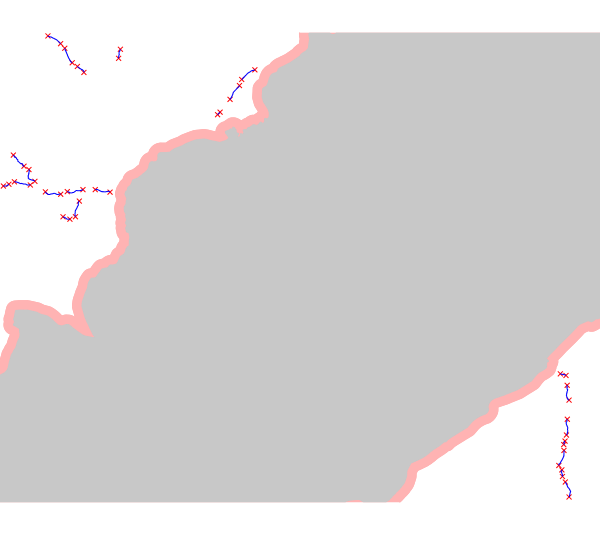
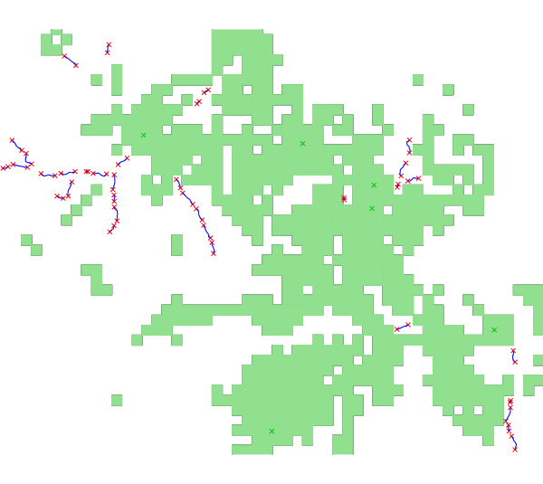

- the rivers considered (vector) on which the potential plants wille be computedThe power is defined as :
- the current discharge (raster) for each point of these rivers.
In the section Legal discharge, you can take into consideration the Minimal Flow Discharge (MFD). It is the amount of water which has to remain in the river to preserve the ecosystems. There are three different ways to proceed which depend on the data you have :
or the MFD can be considered as a percentage of the natural discharge, which is the discharge of the river without considering the structures exploiting the water. In this case, you have to give in input the percentage you want to consider and the raster map of the natural discharge. The discharge considered in the calculation will be the current discharge minus the MFD thus calculated.- the areas to exclude (vector). You can exclude some areas adding in input a vector map of them with or without a buffer around them. Only the rivers outside these excluded areas will be considered to compute the potential plants. There's also the possibility to add an input vector map with points of interest. Then, an area corresponding to the fields of vision from these points is computed, the latter correspond to visibility zones. You can choose to exclude these areas or the areas where several visibility zones are superimposed. The number of points for the visibility corresponds to the number of visibility zones which are superimposed. For example, if this number is 3, the areas where two or less visibility zones are superimposed will be excluded.
or you already have the raster map with the MFD. In this case, the discharge considered in the calculation will be the current discharge minus the MFD read in your input raster map. The module r.green.hydro.discharge can compute the raster map of the MFD according to the legislation of some regions.
or you already have the raster map with the legal discharge. In this case, you can add this map as current discharge input and not use the parameters MFD and natural discharge.
But for each case the raster map of the current discharge is a required input.
- the elevation raster map, to calculate the gross head
- the range of plant length, distance between plants, minimum power and efficiency (optional parameters)
where η is the efficiency of the plant
ρ the density of water (1000 kg/m3)
g the gravity term (9,81 m/s2)
Q the discharge of the river
Δh the gross head of the considered segment
1) In the first case, the code used is :
r.green.hydro.recommended \ discharge_current=currentdischarge \ discharge_natural=naturaldischarge \ percentage=25.00 \ river=availablestreams \ elevation=elevation \ efficiency=0.8 \ len_plant=400 \ len_min=10 \ distance=150 \ area=nationalparks \ buff=200 \ output_plant=potentialplants \ output_point=potentialpoints d.vect map=potentialpoints color=red d.vect map=potentialplants color=blue v.buffer input=nationalparks output=buff_park distance=200 d.vect map=buff_park color=255:179:179 fill_color=255:179:179 width=1
This command calculates the energy potential for a range of plant length from 10 to 400 m and a distance between plants of 150 m. The areas with the national park and a buffer of 200 m around it are excluded. The discharge considered here is the current discharge of rivers subtracted by 25% of the natural discharge (the latter corresponds to the MFD).

Output vector map : superimposition of the potential segments vector file (potentialplants, in blue), the potential intakes and restitution vector file (potentialpoints, in red), the excluded national park (in grey) and the buffer (in light red)
2) In the second case, the code used is :
r.green.hydro.recommended \ discharge_current=currentdischarge \ mfd=mfd \ river=availablestreams \ elevation=elevation \ efficiency=0.8 \ len_plant=400 \ len_min=10 \ distance=150 \ points_view=pointsinterest \ n_points=1 \ output_plant=potentialplants \ output_vis=vis \ output_point=potentialpoints d.vect map= potentialpoints color=red d.vect map= potentialplants color=blue d.vect map= pointsinterest color=green d.vect map= vis color=144:224:144 fill_color=144:224:144 width=1
This command calculates the energy potential for a plant length range from 10 to 400 m and a distance between plants of 150 m. The visibility zones from each point of interest are excluded. The discharge considered here is the current discharge of rivers subtracted by the MFD. The MFD was calculated previously and computed in a raster map.

Output vector map : superimposition of the potential segments vector file (potentialplants, in blue), the potential intakes and restitution vector file (potentialpoints, in red), the points of interest (in green) and the visibility zones (in light green)